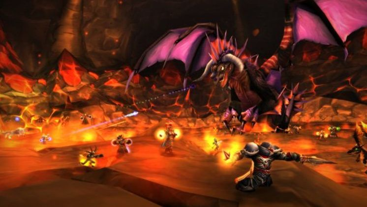

News › Raids : une seule difficulté
Raids : trois raids, une seule difficulté
9 novembre 2026
Les développeurs en disent plus sur les raids qui ouvrent le 9 décembre : trois raids de tailles différentes, une seule difficulté et beaucoup de secrets.

Trois raids au lancement
- Profondeurs des Saisons : 10 joueurs. Pensé comme Karazhan, il deviendra faisable en groupe aléatoire avec le temps.
- Sommet d'Hyjal : 20 joueurs, en plusieurs ailes, pour viser un boss en particulier.
- Repaire d'Onyxia : 40 joueurs. L'équipe s'attend à ce que des groupes tentent de la tuer à moins de 40 pour partager le butin entre moins de joueurs.
- Ils ouvrent en même temps dans toutes les régions, le 9 décembre (voir la Roadmap).
Une seule difficulté
- Pas de mode normal ou héroïque : une seule difficulté par raid, avec des boss cachés et des phases secrètes.
- Objectif : environ deux à trois semaines de progression pour une guilde moyenne.
- Des combats plus durs que le Cœur du Magma, proches d'un boss de Naxxramas, et plus longs qu'en Classic.
- D'après les fichiers du jeu, les bonus mondiaux (Cri de ralliement du tueur de dragon, Bénédiction du chef de guerre, bonus de Hache-Tripes…) et les fortunes de Sayge n'auront pas d'effet en raid.
Le butin
- Les objets des nouveaux raids restent cachés jusqu'à ce qu'un joueur les obtienne : les listes BiS resteront secrètes un moment.
- Le niveau des objets monte d'un palier à l'autre, avec quelques pièces rares qui gardent l'intérêt des anciens raids.
- Un bâton légendaire de soigneur est lié à Hyjal.
Et plus tard
Le Cœur du Magma et le Repaire de l'Aile noire reviendront avec du contenu inédit, et l'équipe aimerait ramener l'Enclave écarlate de la Saison de la Découverte.
Dans notre addon Feu de Camp, tu peux déjà t'inscrire à ces trois raids pour préparer les sorties de guilde.
Sources : JudgeHype (9 novembre 2026), d'après les interviews de Joardee et MrGM ; Kami Labs.